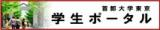

理学部教務係
掲載物一覧
| 資料名 | ダウンロード |
|---|---|
| 1. 日本学術振興会 | |
| 各種事業募集一覧 | |
| 2. 大学院生国際学術会議派遣支援事業 | |
| 募集案内（和文） | |
| 募集案内（English） | |
| 3. 日本学生支援機構奨学金 | |
| 指導教員推薦所見様式（※家計急変の場合にのみ必要） | Excel |
| 4. 大学院教務 | |
| 大学院生の研究許可・研究指導委託申請様式 | |
| 研究指導委託等の申請について | |
| 連携大学院協定による研究指導委託承認願 | Word ｜ PDF |
| 研究指導委託承認願 | Word ｜ PDF |
| 研究許可承認願 | Word ｜ PDF |
| 通学証明書発行願 | Word ｜ PDF |
| 学位論文審査及び最終試験成績報告（博士前期課程用） | Word ｜ Excel ｜ PDF |
| 理学・理工学研究科 博士前期及び博士後期課程学位申請書類の様式一式 ※ |  |
| 理学・理工学研究科 集中講義履修申請様式 ※ | |
|
|